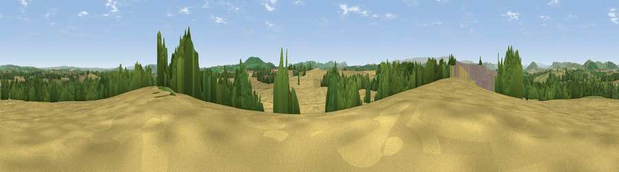

Viewpoint near Ruckhall
#14326 in England · top 40% of its area beats it · near RuckhallWhere it is
The exact computed spot (SO 46875 38625). Click the marker for map links.
The view, rendered

A 360° render of this exact spot computed from the terrain model, tree cover and land cover — summer colours, afternoon light, calibrated against photographs of famous viewpoints. Real trees, hedges and buildings will differ in detail.
The panorama
Grey silhouette: terrain skyline in each direction (720 bearings, Earth curvature and refraction included). Dashed green: skyline with trees (+15 m) and buildings (+8 m) as obstacles. Blue strip: how far the ground is visible on each bearing.
Where the view opens
Wedge length = distance to the farthest visible ground on that bearing (vegetation-aware). Rings at 10, 25 and 50 km.
What fills the view
51% cropland · 24% grassland · 23% woodland · 2% built-up
Angular shares of the visible panorama (visual magnitude), not map area. Landscape diversity 0.48 (0–1 Shannon).
Key numbers
More beautiful places nearby
The staircase of upgrades: each row has a higher view potential than everything closer. Driving times are estimates from straight-line distance, calibrated against real road routing — check an actual route before setting out.
| Place | Direction | Drive | Score |
|---|---|---|---|
| Breinton Common | NW · 2 km | ~5 min | 61.0 |
| Viewpoint near Callow | SSE · 5 km | ~11 min | 68.1 |
| Dinedor Camp | ESE · 6 km | ~13 min | 72.8 |
| Viewpoint near Callow | SSE · 6 km | ~13 min | 75.9 |
| Viewpoint near Aconbury | SE · 7 km | ~14 min | 76.5 |
| Viewpoint near Orcop Hill | S · 10 km | ~19 min | 79.9 |
| Viewpoint near Orcop Hill | S · 10 km | ~20 min | 80.7 |
| Garway Hill | SSW · 14 km | ~25 min | 84.6 |
52.04346, -2.77599 · source: screening · position refined by local search. Computed location — check access rights before visiting.